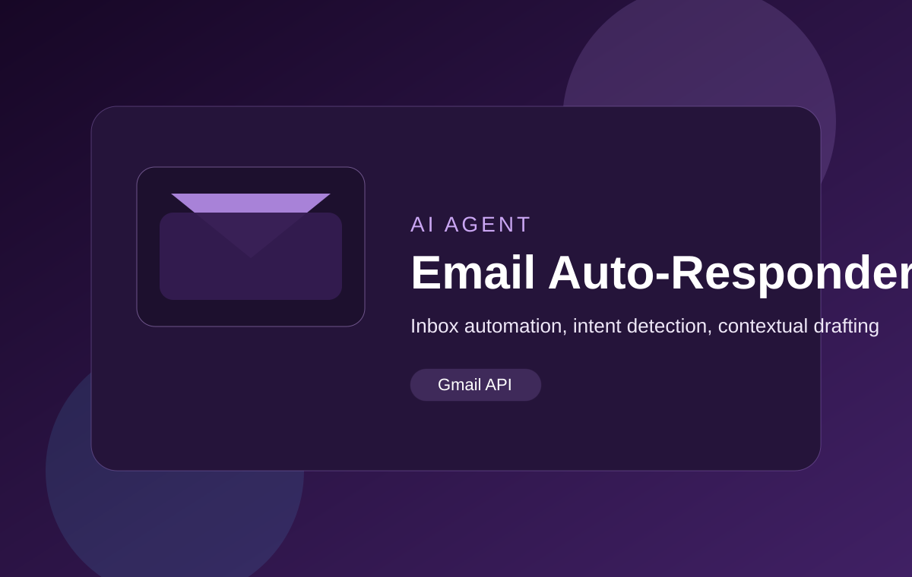

Role
AI Engineer
AI-powered email workflow designed to read inbox activity, understand the request, and draft contextual replies for faster client communication.

AI Engineer
Client workflow build
Improves response turnaround and reduces repetitive email drafting effort.
This system focuses on email automation for client-facing workflows. It is designed to monitor messages, classify intent, draft intelligent responses, and support faster handling of repetitive requests.